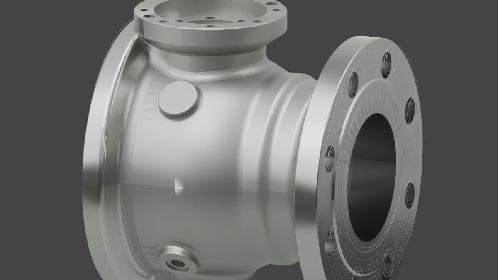
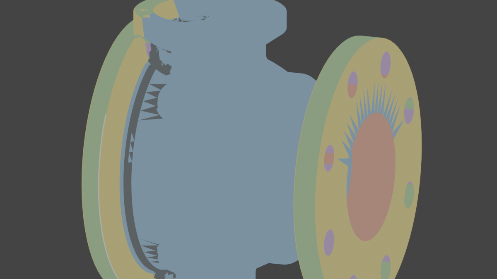
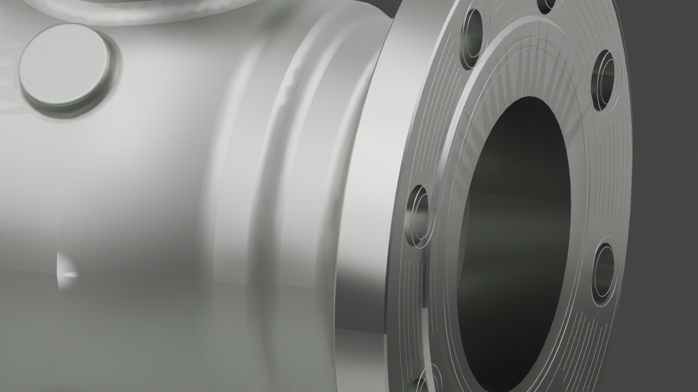

Goal 25-D / isolated valve body / material zoning proof
阀体多材质分区渲染
同一个 STEP-derived 阀体 网格按制造区域分配可复用不锈钢材质编号，并把 Goal 25-C 更克制的显式几何加工痕回迁到法兰端面、主内孔和螺栓孔口。



Material IDs
- G25-SS-CAST-BLASTED-SATIN-01阀体主壳/柱体investment-cast stainless body, bead/sand blasted satin, non-directional, metal reflection retained
- G25-SS-MACH-FLANGE-RADIAL-01法兰正面flat machined flange face with restrained explicit concentric tool-path trace migrated from Goal 25-C
- G25-SS-BRUSH-NO4-LINEAR-01法兰外圆侧面brushed/satin stainless on flange outside diameter, directional but still industrial
- G25-SS-MACH-BORE-CIRCULAR-01内孔/流道入口darker cylindrical machined bore with restrained circumferential cutting trace migrated from Goal 25-C
- G25-SS-EDGE-BURNISH-01倒角/棱线/凸筋高点thin brighter worn edges and bevel highlights from handling or final deburring
- G25-SS-MACH-BOLT-BORE-DARK-01螺栓孔内壁smaller darker, rougher machined cylindrical walls with local rim and inside-ring witness traces
- G25-SS-ROOT-DARK-AO-01凹槽根部dark reflection-retaining metal in shoulder grooves and root transitions; explicitly not lifted to powder white